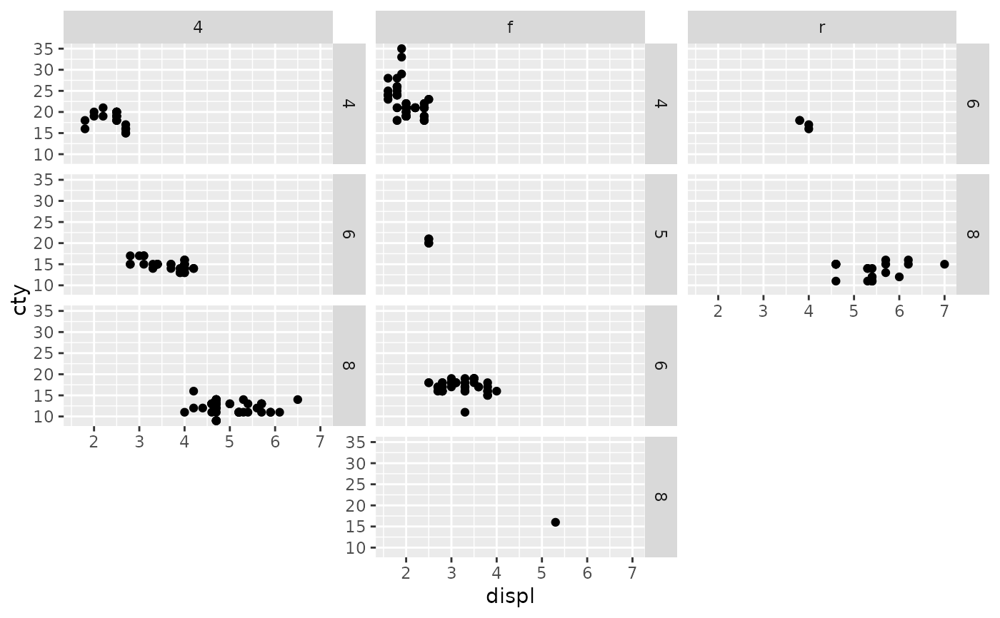
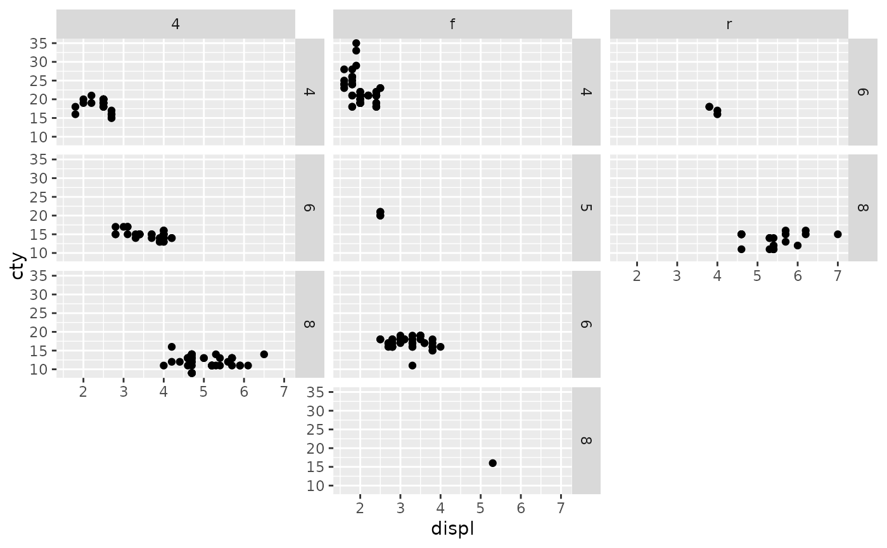

Lay out panels in a ragged grid
Source:R/facet_ragged.R, R/facet_ragged_rows.R, R/facet_ragged_cols.R
facet_ragged.RdThese facets create layouts in-between ggplot2::facet_wrap() and
ggplot2::facet_grid(). Panels are arranged into groups stacked along the
defining dimension, but remain independent in the other dimension, allowing
for a grid with ragged edges. This can be useful, for example, to represent
nested or partially crossed relationships between faceting variables.
Usage
facet_ragged_rows(
rows,
cols,
...,
scales = "fixed",
switch = "none",
strips = "margins",
axes = "margins",
align = "start",
labeller = "label_value"
)
facet_ragged_cols(
rows,
cols,
...,
scales = "fixed",
switch = "none",
strips = "margins",
axes = "margins",
align = "start",
labeller = "label_value"
)Arguments
- rows, cols
A set of variables or expressions quoted by
ggplot2::vars(), the combinations of which define the panels in the layout.- ...
Arguments reserved for future use.
- scales
Determines which panels share axis ranges. By default (
"fixed"), all panels share the same scales. Use"free_x"to let x-axes vary, use"free_y"to let y-axes vary, or"free"to let both axes vary. Panels within groups always share the scale along the grouping dimension.- switch
Determines how facet label strips are positioned. By default (
"none"), strips are drawn to the top and right of the panels. Use"x"to switch the top strip to the bottom, use"y"to switch the right strip to the left, or"both"to do both.- strips
Determines which facet label strips are drawn. By default (
"margins"), strips between panels along the grouping dimension will be suppressed. Use"all"to always draw both strips.- axes
Determines which axes are drawn. By default (
"margins"), axes between panels will be suppressed if they are fixed. Use"all_x"to always draw x-axes,"all_y"to always draw y-axes, or"all"to always draw both axes.- align
Determines how panels are positioned within groups. By default (
"start"), panels in groups are densely packed from the start. Use"end"to instead pack panels to the end of the group.- labeller
A function that takes one data frame of labels and returns a list or data frame of character vectors. Each input column corresponds to one factor. Thus there will be more than one with
vars(cyl, am). Each output column gets displayed as one separate line in the strip label. This function should inherit from the "labeller" S3 class for compatibility withlabeller(). You can use different labeling functions for different kind of labels, for example uselabel_parsed()for formatting facet labels.label_value()is used by default, check it for more details and pointers to other options.
Examples
p <- ggplot(mpg, aes(displ, cty)) + geom_point()
p + facet_ragged_rows(vars(drv), vars(cyl))
 p + facet_ragged_cols(vars(cyl), vars(drv))

# \donttest{
# Allow axes to vary between panels
p + facet_ragged_rows(vars(drv), vars(cyl), scales = "free_y")
p + facet_ragged_cols(vars(cyl), vars(drv))

# \donttest{
# Allow axes to vary between panels
p + facet_ragged_rows(vars(drv), vars(cyl), scales = "free_y")
 p + facet_ragged_rows(vars(drv), vars(cyl), scales = "free")
p + facet_ragged_rows(vars(drv), vars(cyl), scales = "free")
 # Change strip label positions
p + facet_ragged_rows(vars(drv), vars(cyl), switch = "y")
p + facet_ragged_rows(vars(drv), vars(cyl), switch = "both")
# Draw strips between panels
p + facet_ragged_rows(vars(drv), vars(cyl), strips = "all")
# Draw axes between panels
p + facet_ragged_rows(vars(drv), vars(cyl), axes = "all_x")
p + facet_ragged_rows(vars(drv), vars(cyl), axes = "all")
# }
# Change panel alignment
p + facet_ragged_rows(vars(drv), vars(cyl), align = "end")
# Change strip label positions
p + facet_ragged_rows(vars(drv), vars(cyl), switch = "y")
p + facet_ragged_rows(vars(drv), vars(cyl), switch = "both")
# Draw strips between panels
p + facet_ragged_rows(vars(drv), vars(cyl), strips = "all")
# Draw axes between panels
p + facet_ragged_rows(vars(drv), vars(cyl), axes = "all_x")
p + facet_ragged_rows(vars(drv), vars(cyl), axes = "all")
# }
# Change panel alignment
p + facet_ragged_rows(vars(drv), vars(cyl), align = "end")